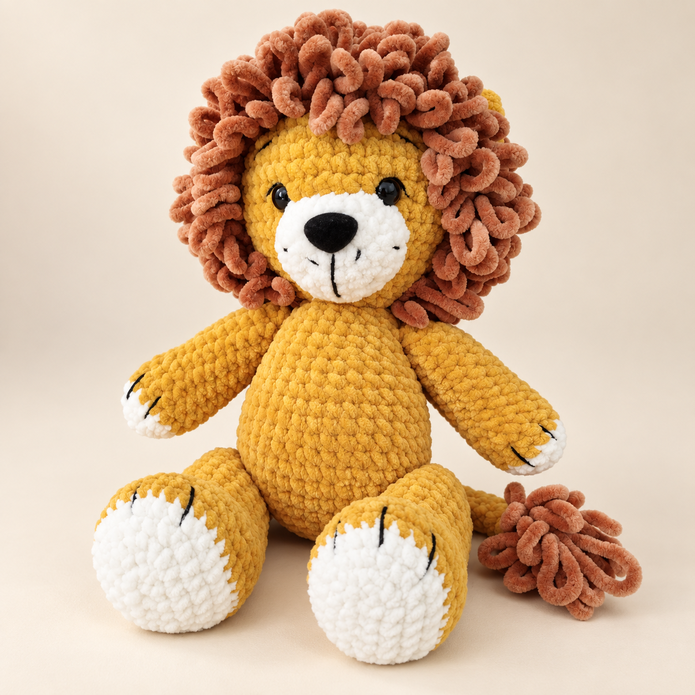
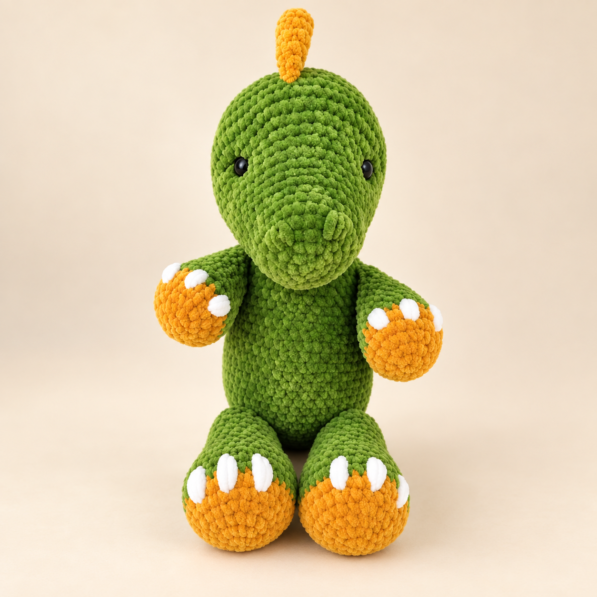
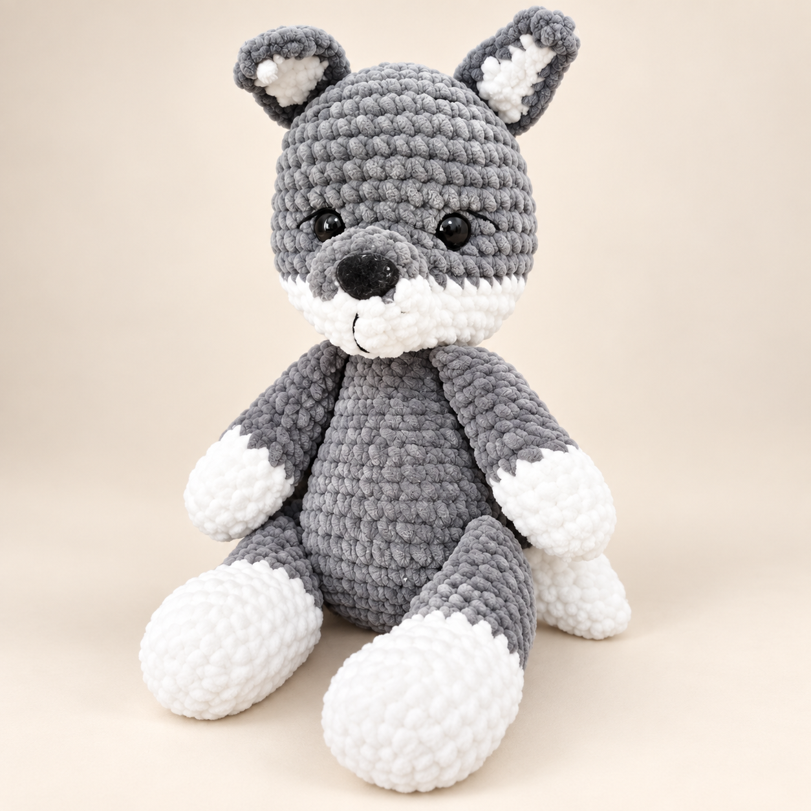
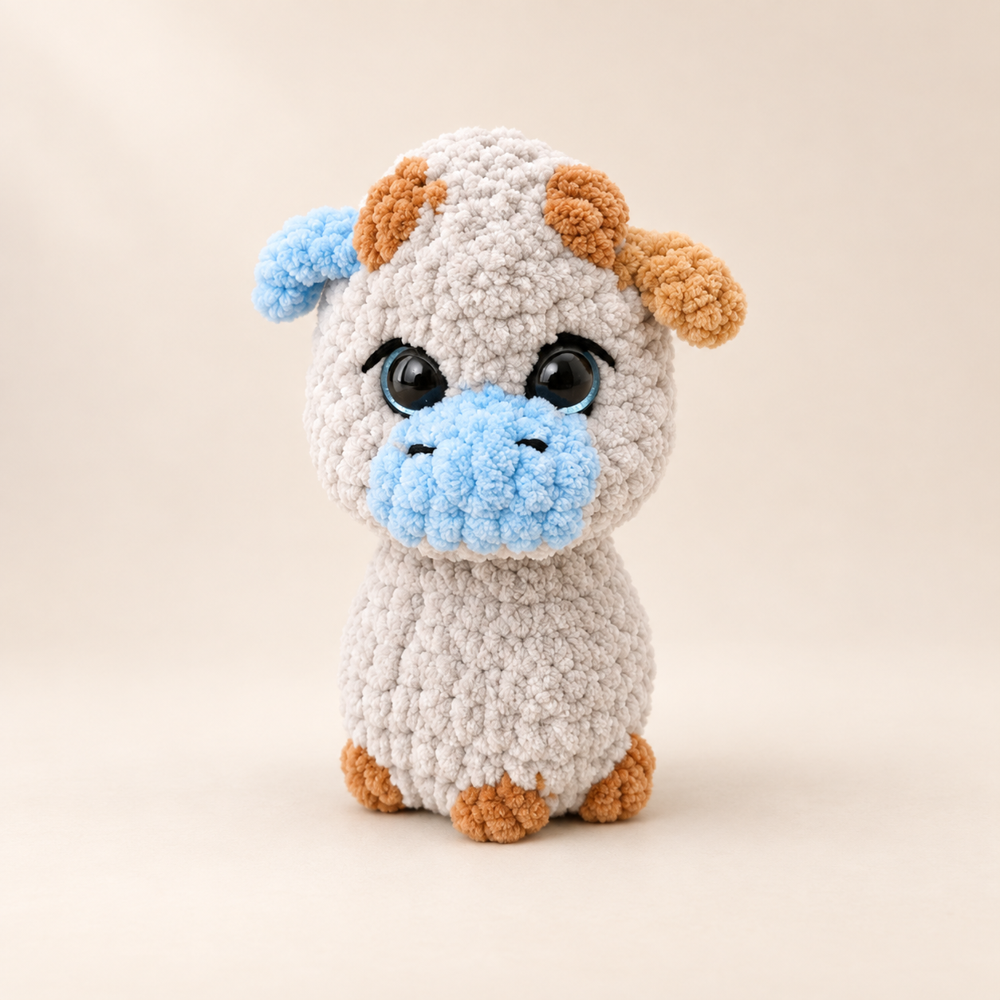
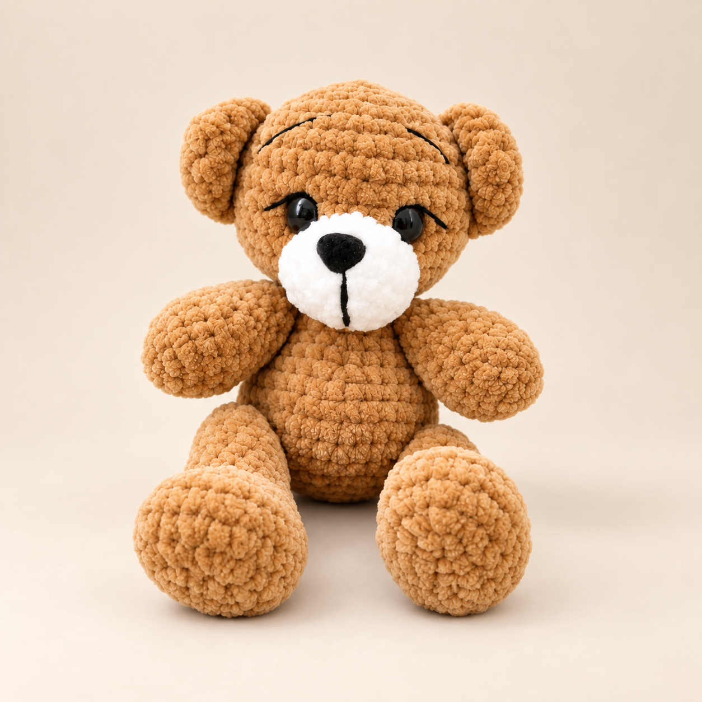
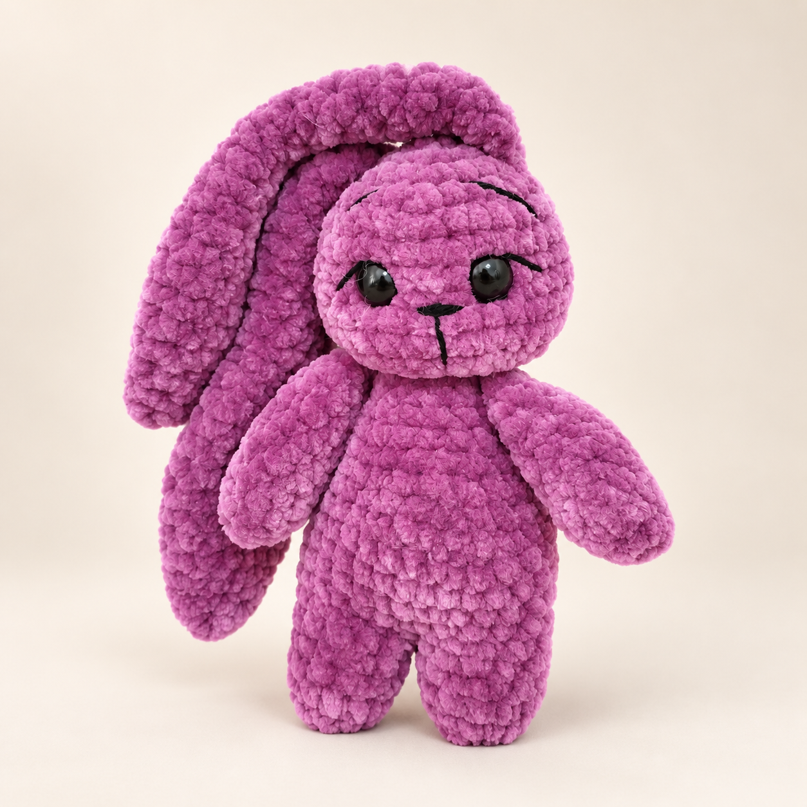
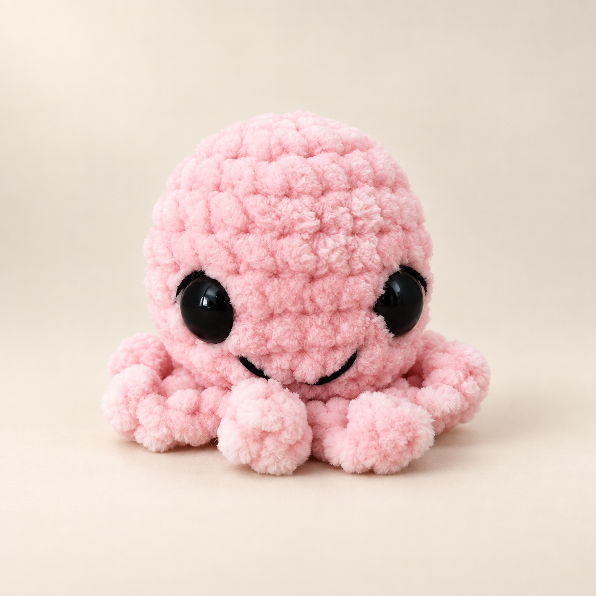
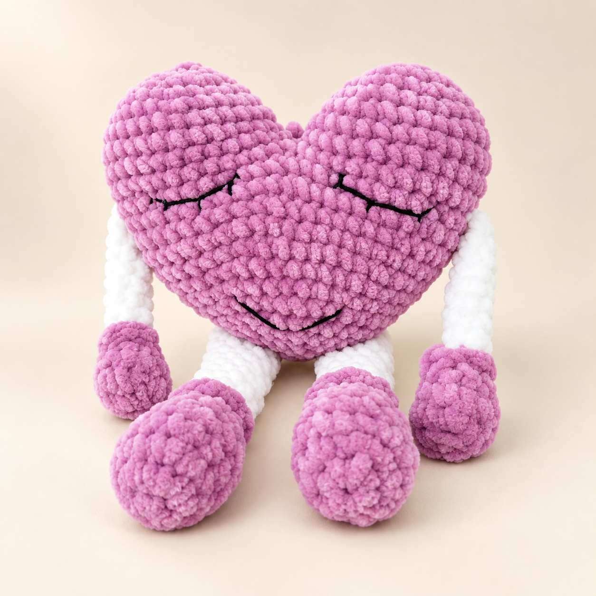

Lav Leo
Lav sa bujnom grivom od petljica i belom njuškicom. Ruke i noge su pokretne, pa može da sedi uz dete u krevetu.
Naše igračke
Svaka je heklana ručno, od mekog žanil prediva. Boje se biraju po želji - ista igračka može da bude u bilo kojoj nijansi.

Lav sa bujnom grivom od petljica i belom njuškicom. Ruke i noge su pokretne, pa može da sedi uz dete u krevetu.

Zeleni dinosaurus sa narandžastim šapama, belim kandžicama i bodljama od glave do repa. Jedan od naših najtraženijih modela.

Mekan sivi vuk sa belim šapama i mekanim trbuhom. Dovoljno velik za grljenje, dovoljno lak da ga dete nosi svuda.

Kravica sa plavom njuškicom, braon rogovima i velikim očima. Staje u dečiju ruku.

Klasični meda u toploj braon nijansi, sa belom njuškicom. Naš prvi model - onaj od kog je sve počelo.

Zeka od baršunastog prediva, taman toliko velika da spava pored bebe u krevecu.

Roze hobotnica sa nasmejanim licem - najčešći poklon za nežne, male ruke.

Veliko roze srce sa nasmejanim licem i dugim nogicama. Meko koliko i jastuk.
Heklamo i po vašoj ideji - pošaljite nam fotografiju ili opis, pa ćemo vam reći da li možemo i koliko traje izrada.
Pošalji poruku na Instagramu